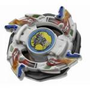

Dragoon V2
| Dragoon Victory 2 | |
|  | |
| Number: | A-69 |
|---|---|
| System: | 6-Layer/Magnecore |
| Type: | Attack |
Contents
Attack Ring (AR): Spike Dragon
- Weight: 4.8 grams
Spike Dragon is a fairly thick Attack Ring, depicting four dragon heads and crests, each elevated slightly above the lower edge of the AR's central ring. The relatively smooth, curved edges that are formed by the brow ridges, top of the head, and crest of each dragon head lead back to abrupt, thick, flat vertical surfaces, resembling in form an exaggeration of its predecessor, Eight Attacker's, main contact points. These flat faces are the primary contact points of Spike Dragon in left spin and the source of its incredibly powerful Smash Attack. Furthermore, each of these contact points are augmented with four parallel vertical lines, which further improve the Attack Ring's power by focusing the force of its hits onto smaller areas; providing the Spike Attack which gives Spike Dragon its name.
However, while Spike Dragon is an extremely hard-hitting left-spin Attack Ring, it is hampered by the severe Recoil it suffers as a result of the wide, flat faces of its contact points. While the use of Spike Attack does negate this somewhat, the fact remains that this issue leaves Spike Dragon only effective as a OHKO AR, albeit one of the more competitive OHKO Attack Rings of the Plastic Generation.
The curved edges of each dragon head and crest form the main contact points of this AR in right spin. Due to the lack of significant contact points, and the fact that, while rounded in a defensive manner, the sheer size of each protrusion means they suffer from substantial Recoil, Spike Dragon has no competitive use in right spin.
Use in OHKO Customization
The key to successfully using Spike Dragon in an Attack customization is a good launch. It must make contact early in battle, when it is moving at maximum speed to be able to overcome its Recoil and knock the opponent out or it will almost certainly lose. The following customization is focused on maximizing controllability and speed at the start of the battle, with only enough Survival and Defense to make and survive the early hits Spike Dragon requires for victory.
- AR: Spike Dragon (Dragoon V2)
- WD: Wide Defense
- SG: Neo Left SG
- SG Core: Metal Weight Core
- BB: Storm Grip Base (Dragoon S)
While it loses speed sooner than other Bases, for example Dragoon V2's own Customize Grip Base, Storm Grip Base is still extremely fast at the start of the battle, and, unlike Customize Grip Base, handles Recoil very well. The loss of speed is not a major issue for Spike Dragon, since it is usually unable to KO after that much time has passed anyway. The externalized weight distribution of Wide Defense helps both increase this speed and maintain it longer, as well as focusing more weight behind the contact points. In addition to the weight of Wide Defense, a Metal Weight Core is used in the Spin Gear to control the Recoil of Spike Dragon without weighing down Storm Grip severely, providing an excellent balance between Recoil control and speed. While risky, given a good Sliding Shoot, this customization can be used very successfully in a competitive situation.
Weight Disk (WD): Magne Weight Disk
- Weight: 14.6 grams
See Magne Weight Disk.
Spin Gear (SG): Neo Left Spin Gear (Normal Core)
- Weight (Total): 3.6 grams
- Weight (Core): 1.2 grams
Dragoon V2 comes with a unique SG Core, which replaces the metal cylinders of the Metal Weight Core and Magnecores with a hollow plastic tube, resulting in extremely light weight. This serves to reduce the weight directly over the tip of the Beyblade, to produce a more externalized weight distribution, ideal for Smash Attack and Survival. However, as the internal plastic part of regular Spin Gears may also be used in Neo Casings, the Normal Core is only the second lightest option available (though certain bases from the V and V2 series may only be used with a Neo Spin Gear, few of these are competitively viable), and for Survival, between this factor and the high performance offered by Bearing-based Spin Gears, the Normal Core sees little use ? though it is the best option for using Customize Metal Sharp Base in a Zombie combination. For Smash Attack, often the Recoil handling ability granted by heavier Cores is desired, and again, if one seeks light weight, a regular SG internal part is superior. As such, this part sees relatively little competitive use, though it may still be helpful in fine-tuning Smash Attack customizations and the aforementioned Zombie customization - for which the Neo Left SG it comes with is also useful.
Use in Zombie Customization
- AR: Scissor Attacker (Metal Dranzer)
- WD: Wide Survivor
- SG: Neo Left SG
- SG Core: Normal Core (Dragoon V2)
- SP: Defense Ring (Voltaic Ape)
- BB: Customize Metal Sharp Base (Voltaic Ape)
While outclassed by Bearing-based alternatives, being the lightest Spin Gear Core that is compatible with Customize Metal Sharp Base makes Normal Core the primary choice for Zombie Customizations using that Base. Customize Metal Sharp Base has excellent Survival thanks to the low friction of its sharp metal tip, and counters the inherent stability issues of this tip with sloped plastic surrounds, which allow it to continue spinning for a long time after losing balance, providing it with good Life After Death, and also serving to slightly increase the Defense of the Base. Defense Ring further increases that Life After Death, albeit only slightly, as the combination only topples to this point once it has barely any spin remaining. Scissor Attacker provides solid Defense and excellent Survival due to the smooth curves of its leading edges in left spin and its small size, barely protruding past the edge of Wide Survivor, and outperforms the more famous Tiger Defenser in this spin direction (though performing noticeably worse in right spin), as well as being inexpensive and relatively easy to find. Wide Survivor is chosen for the unmatched Survival and Spin Stealing offered by its wide weight distribution and circular perimeter. A Neo Left Spin Gear is chosen as right spin opponents are more common, though against a left spin opponent, Neo Right Casings should be used. As a whole, while this combination is somewhat outclassed, most of the parts required are either very useful themselves or the Beyblades they come from come with other useful parts, making it a worthwhile combination while one is still building a collection of competitive parts, though it is still a good Survival customization in its own right.
Support Parts (SP): Reverse Attack
- Weight: 0.9 grams each
Dragoon V2's Support Parts, Reverse Attack, are the two-part variety of Support Parts, with two fin-shaped protrusions on each part, which can be flipped over so these fins face left or right. Their overall shape is loosely based on the main contact points of Spike Dragon in either spin direction, in their more aggressive mode, with the fins tips facing forwards, they are similarly striated, again creating Spike Attack, though their overall shape is much less extreme and the ends of the fins are more curved than the abrupt ends of Spike Dragon, producing far less Recoil. This makes them a fairly reliable Smash Attack Support Part ? arguably more so than the more popular Fin Tectors, due to the latter's Recoil troubles. When Reverse Attack is reversed, the smooth, curved leading surface of each fin, based on the brows of Spike Dragon's dragon heads, provides some Defensive ability, albeit heavily outclassed by the numerous Defense and Survival Support Parts available, such as Defense Ring, Cross Survivor, and Survivor Ring.
In fact, the weight distribution and low Recoil of such Support Parts often makes them a much more reliable choice for Attack Customizations than Reverse Attack? Attack Types usually have little need for secondary contact points, given their Attack Rings are specifically chosen for this purpose, and much better at it than any Support Part. While tall bases such as Dragoon V2's own Customize Grip Base do benefit from lower contact points, not only does the widely available Triple Tiger reach low enough to compensate for this, but Twin Guard and Survivor Ring both provide suitable Smash Attack for this purpose, suffer less Recoil and have a much better Weight Distribution, allowing greater speed and more powerful attacks, making them better choices. Overall, despite their solid performance, Reverse Attack are generally outperformed by other options, and should only be used if those are unavailable.
Blade Base (BB): Customize Grip Base
- Weight of Base: 4.7 grams
- Weight of Tip: 1.8 grams
Customize Grip Base is a relatively tall Base with a mostly smooth underside, interrupted by the bolt-like details of the slightly raised cross pattern which divides the base into four quadrants. In the center is a wide shaft section with fairly thick walls which taper slightly towards the bottom, ending in a fairly wide hole, inside which sits a removable blue-colored flat rubber Tip with rounded sides. Like the tip of Dragoon V, this tip contains a magnet, designed for use in a Magnecore Stadium. The width of the bottom of the tip is slightly wider than that of Grip Base, and as a result Customize Grip Base is capable of similarly fast, aggressive movement. In addition to this, not only can Customize Grip Base be used with any non-gimmicked Spin Gear or Neo Spin Gear, but as a Base from the V2 Series, it is also able to use Support Parts, allowing for a wide range of customizations, being one of two Bases with the ability to use the various Neo Spin Gear Cores (including Metal Driger's Heavy Metal Core), Support Parts, and a rubber Tip simultaneously, and given the fragility of the only other Base able to do this, SG Grip Change Base, it is certainly the only viable choice for doing so.
However, Customize Grip Base has three major weaknesses that prevent it from outshining Grip Base and SG Grip Change Base] (or at least the Tip thereof) for Attack. The first and most obvious is its height ? it is a tall Base, meaning that it has difficulty against lower opponents, both in making contact and the Recoil some Attack Rings suffer as a result of the angle they hit at, though it does offer some advantages against other taller opponents with well-defended lower portions such as Wolborg 4's Circle Survivor or Grip-Based Defense Customizations, may be compensated for by the use of an Attack Ring which overhangs the Weight Disk, most notably Triple Tiger, or even used to a customizations advantage in a Force Smash combination. The second issue is weight ? while the Tip is slightly wider than that of Grip Base and of identical consistency, which should mean faster movement, the weight of the Base, its Support Parts and the magnet in the Tip itself mean Customize Grip Base falls slightly short of the incredible speeds Grip Base is capable of. Lastly, and most importantly, the rounded sides of the Tip easily slip over the Tornado Ridge of Stadiums, resulting in a tendency to self-KO when launched incorrectly or as a result of collisions, so Customize Grip Base has relatively poor Recoil handling for a rubber-tipped Blade Base. This also nullifies any controllability that may be gained from its weight. It must be kept in mind, though, that the only two superior options are exceedingly rare and expensive, leaving Customize Grip Base as arguably the best value for money Attack Base, and certainly one of the most versatile.
Customize Grip Base's usefulness is not limited to Attack, however. In fact, it is perhaps more famous for its use in Defense, and to a lesser extent, Survival customization. Due to the removable Tip and diameter of the Shaft section, Customize Grip Base is capable of holding a wide range of other Spin Gear setups, most notably Bearing SGs such as Wolborg 2's SG (Bearing Version 2), as well as having the ability to use Support Parts, the only base to do so other than Customize Bearing Base, which is much more limited in terms of compatible Spin Gears. For Survival, the usefulness of this is questionable: most, if not all Zombie Tips have such poor Defensive ability that using Customize Grip Base merely sacrifices the superior Life After Death offered by Defense Grip Base 2 without providing any worthwhile increase in the Defensive potential of the combination as a whole, although some may still prefer the slight increase it does provide. Furthermore, of all the Survival-oriented Zombie Spin Gears available, arguably the best is Burning Kerberous' Neo SG (Double Bearing Version), which is best used with the Customize Bearing Base it comes with, due to Customize Grip Base suffering scraping issues with that Spin Gear and Customize Bearing Base's superior shape for Defense and Stamina.
However, the main use of Customize Grip Base's Defensive abilities is as a staple component of Grip-Based Defense Customizations (more specifically Defensive Zombies), due to the excellent synergy it has with the integral part of those combinations, Wolborg 2's SG (Bearing Version 2) Shaft. Customize Grip Base's bulk and ability to use Support Parts serves to address the weakness to Upper Attack created by the Shaft's height, while still providing good Life After Death (given the use of suitable SP), and the combined width of the Base and any suitable Support Part helps to prevent the Tip from being pushed to angles which may cause it to roll the combination out of the stadium, as can occur with other Bases.
Customize Grip Base's incredible versatility, even for a V2 Series Blade Base, means that it may be used in an extensive range of customizations, a sample of which are included below.
Compatible Bearing Casings
The following casings are compatible with Customize Grip Base:
- SG (Free Shaft Version) (Dranzer S) (One Bearing)
- SG (Bearing Version) (Wolborg) (One Bearing)
- SG (Bearing Version 2) (Wolborg 2) (One Bearing)
- Neo SG (Double Bearing Version) (Burning Kerberous) (Two Bearings)
Use in Smash Attack Customization
- AR: Triple Tiger (Driger G)
- WD: Wide Defense
- SG: Neo Right SG
- SG Core: North or South Magnecore
- SP: Survivor Ring (Dark Series)
- BB: Customize Grip Base (Dragoon V2)
- Tip: Customize Grip Base Tip (Dragoon V2)
Triple Tiger's low-hanging design effectively compensates for the height of Customize Grip Base, and Survivor Ring can be lined up with the leading edge of Triple Tiger to enhance the vertical range of the combination and focus more weight on its contact points, to produce even more powerful Smash Attack. Wide Defense is chosen for its externally distributed weight, and combined with either a North or South Magnecore, has enough weight to prevent any Recoil issues. This is arguably the best use of Customize Grip Base for Smash Attack, and a highly competitive combination overall.
Use in Upper Attack Customization
- AR: Upper Claw (Driger V2)
- WD: Ten Heavy or Wide Defense
- SG: Neo Right SG
- SG Core: Heavy Metal Core (Metal Driger)
- SP: Upper Attack (Driger V2)
- BB: Customize Grip Base (Dragoon V2)
- Tip: Customize Grip Base Tip (Dragoon V2)
Customize Grip Base's status as the only practical Attack base that allows Support Parts and a Heavy Metal Core to be used together means it is the primary choice for Upper Attack Customizations with Driger V2's AR and Support Parts, where its height addresses their scraping issues, and its excellent speed not only increases the effectiveness of their Upper Attack, but amplifies the Smash Attack the AR and SP produce, to the point it is viable to use Wide Defense in place of 10 Heavy, trading off some Upper Attack ability to increase Smash Attack, which can allow the combination to defeat opponents it may not be able to with Upper Attack alone.
Use in Force Smash Customization
While not a common type of customization, Customize Grip Base's practically unique combination of height, grip, and speed makes it an absolute must-have part for Force Smash Customizations. An example of this follows:
- AR: Smash Turtle (Master Draciel/Kids Draciel)
- WD: Wide Defense
- SG: Neo Right SG
- SG Core: Heavy Metal Core (Metal Driger)
- SP: Defense Ring (Voltaic Ape)
- BB: Customize Grip Base (Dragoon V2)
- Tip: Customize Grip Base Tip (Dragoon V2)
Force Smash combinations in the Plastic Generation are somewhat of an anomaly; while they use aggressive, Bases and parts which overall suggest an aggressive combination with poor survival, they achieve the vast majority of their victories by outlasting their opponents, as they focus on destabilizing opponents to the point of scraping, in aiming to wear down their Stamina. If done correctly, this is a surprisingly reliable tactic, and unless facing a bearing-based Zombie or Defensive Zombie, both of which easily absorb the hits and use parts which greatly minimize the effects of any scraping induced by Force Smash, this customization will almost always outspin any opponent that cannot KO it, which, due to its grip, use of a Heavy Metal Core, and overall round, defensive profile, is a fairly difficult feat to accomplish.
Use in Defense Customization
- AR: Twin Horn (Hasbro) (White Gabriel G)
- SAR: Dragon Saucer SAR (Gaia Dragoon G)
- WD: Wide Defense
- SG: Neo Left SG
- SG Casings: Neo SG (Double Bearing Version) Casings (Burning Kerberous)
- SG Shaft: SG (Bearing Version 2) Shaft (Wolborg 2)
- SP: Defense Ring (Voltaic Ape)
- BB: Customize Grip Base (Dragoon V2)
As mentioned previously, Defensive Zombies, the most competitive variety of Grip-Based Defense customizations, are perhaps the most famous use of Customize Grip Base, thanks to the excellent synergy it has with Wolborg 2's Shaft ? the staple part of the type. The above combination is one of the strongest possible, with an Attack Ring setup that offers great Survival and incredible Defense, Wide Defense providing good weight and Survival, and the second lowest Recoil of any legal Weight Disk, the Neo SG (Double Bearing Version) Casings not only allowing the use of two Bearings with the Shaft, but also lowering the overall height of the customization to help address its relative weakness to Upper Attack, Defense Ring's excellent Life After Death (though Cross Survivor may be chosen for additional Defense, this is rarely worth the Stamina tradeoff), and Customize Grip Base increasing the Defense of the customization against low Attack types, and the most important part ? The SG (Bearing Version 2) Shaft providing incredible Grip without sacrificing much Survival thanks to its unique combination of a Defensive rubber Tip and the ability to use Bearings. Lastly, the customization can be launched aggressively with practice, and while its round shape is not particularly conducive to aggressive tactics, it can use its momentum to score KO victories against defensively poor opponents who may seek to outspin it ? though Weak Launching can be used by opposite-spin opponents to negate this. Overall, this customization is extremely dangerous in a competitive situation, and while the rising popularity of combinations based on Wolborg 4's Circle Survivor does pose some concern, as those combinations often counter Defensive Zombies completely, it can easily win battles even in the hands of a relatively inexperienced Blader.
Use in Zombie Customization
- AR: Scissor Attacker (Metal Dranzer)
- WD: Wide Survivor
- SG: Left Spin Gear (Bearing Version) (Wolborg)
- SG Shaft: SG (Bearing Version) Shaft (Wolborg)
- SP: Defense Ring (Voltaic Ape)
- BB: Customize Grip Base (Dragoon V2)
While not the optimal choice, Customize Grip Base is still a viable choice for Zombie customizations, especially if one does not own a Burning Kerberous or Wolborg 2, or wants more Defense from a Zombie using Wolborg or Metal Dragoon Bearing Stinger's Shafts, though as mentioned previously, the benefit of this is questionable at best. Scissor Attacker is chosen for its excellent Survival and solid Defense, thanks to its small size and the smooth curve of its leading edges in left spin. Wide Survivor is used for optimal Survival and Spin Stealing. Defense Ring is chosen to optimize the customizations Life After Death ability, and Wolborg's Spin Gear and Shaft are used as they emphasize the Defensive properties of Customize Grip Base, as well as providing great Survival, though only the Takara version of the Shaft is considered Top-Tier for this purpose.
Other Versions
- Dragoon V2 - BBA Championship Version - comes with Ten Wide and South Magnecore instead of Magne Weight Disk and Normal Core
- Dragoon V2 - Toys R Us Fire Blader Version (Red)
- Dragoon V2 - Bakuten Shoot Beyblade 2002 Limited Edition Version (Gun Metal Black)
- Dragoon V2 - Random Booster 12 Secret Proze Version (Yellow)
- Dragoon V2 - Coro Coro Limited (Silver)
- Dragoon V2 - Movie Version (Red)
Gallery
Dragoon V2 - Original Version
-
Spike Dragon AR
-
Spin gear, weight disk, blade base and support parts
-
Top view
-
3/4 view
-
Side view
-
Bottom view
Dragoon V2 - Bakuten Shoot Beyblade 2002 Limited Edition [Gamecube] (Gun Metal Black)
-
Front view
-
Side view
-
Bottom view
Dragoon V2 - Toys R Us Fire Blade Version (Red)
-
Top View
-
3/4 View
-
Bottom View
-
Parts
Dragoon V2 - CoroCoro Limited (Silver)
-
Front of the box
-
Back of the box
-
Parts in package
-
Support Parts package
-
Sticker sheet
Overall
Dragoon V2 introduced players to the highly acclaimed V2 generation and the use of Support Parts, and did so in a big way, encompassing many of the attributes that would make the series so popular with fans. The Attack Ring, Weight Disk, Spin Gear Core and Support Parts are all useful, if slightly outclassed, but the Blade Base alone makes this Beyblade a must have through its excellent performance in a wide range of Customizations, being a staple of more than one and arguably the most versatile Blade Base of the Plastic Generation. In addition to this, the Neo Left SG Casings are similarly vital parts, and the only other Beyblade to include them is the mediocre Dragoon V. As such, every Blader should own multiple copies of this Beyblade.